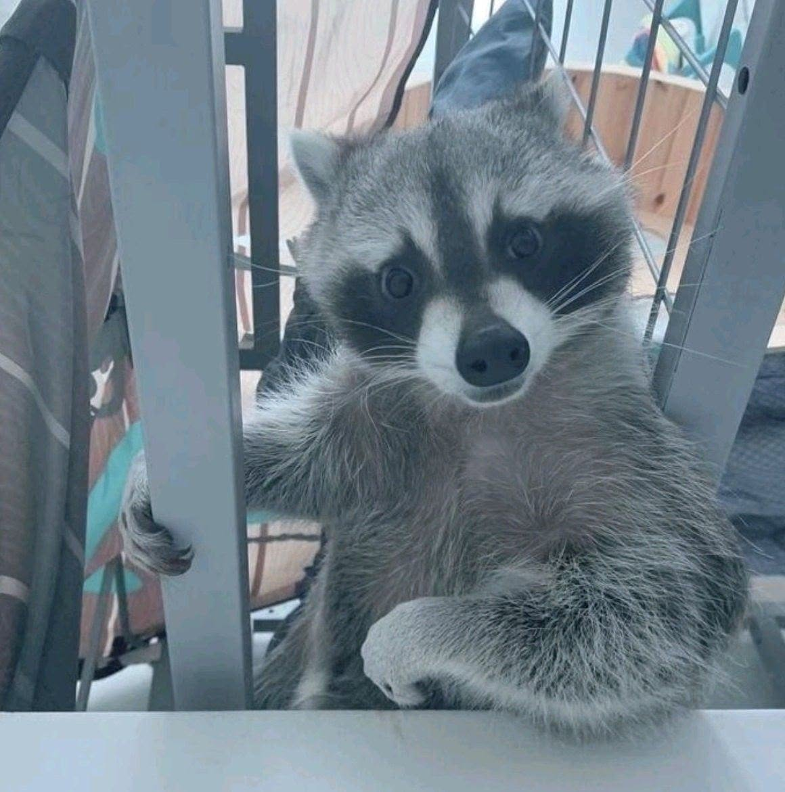

Xin chào, mình là Lưu Hoàng Tân
Sinh viên Trường Đại học Hải Phòng, yêu thích công nghệ, game và thể hình.
Đây là website cá nhân mình làm để giới thiệu về bản thân, mái trường THPT thân yêu, những sở thích và con đường mình đang đi.
Xem sở thích của mình
Thông tin cơ bản
- Họ và tên
- Lưu Hoàng Tân
- Ngày sinh
- 06/09/2005
- Quê quán
- Nam Định
- Trường
- Đại học Hải Phòng – Khoa Công nghệ Thông tin, lớp CNTT3.K24
- tanluu695@gmail.com
Tính cách
Ham học hỏi
Thích thử công nghệ mới và học qua từng dự án nhỏ.
Kiên trì
Gặp lỗi thì sửa tiếp, không bỏ cuộc giữa chừng.
Hướng lung tung
Thi thoảng hướng ngoại, còn lại thì hướng nội.